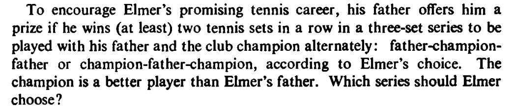
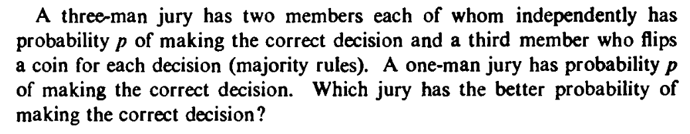
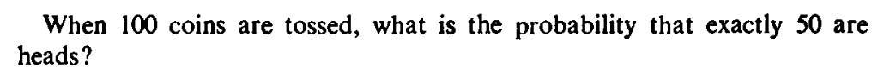
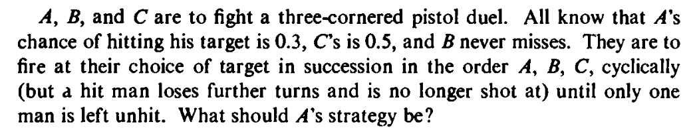

It is easy to see why this definition is natural. For example, consider the statement
"Lefthandedness is indepdendent of a person's gender."
If there are about 5% lefties in the entire population, then this statement will imply that
these 5% is more or less equally divided among men and women. In particular, if there are 40% men and 60% women, then
the proportion of female lefties should be 5% of 60%, i.e., 5% $\times$ 60%. Thus, the
multiplication comes naturally.
Here is a more mathematical example.
EXAMPLE:
Suppose that we
toss a fair coin twice. So the sample space is $\Omega = \{HH,
HT, TH, T T\}.$
Let $A$ be the event that the first toss shows $H,$
and $B$ be the event that the second toss shows $H.$ In
other words, $A=\{HH,HT\}$ and $B=\{HH,TH\}.$ As the
outcome of one toss can have no influence on the outcome of
another, so intuitively $A,B$ should be "independent".
From the definition also $P(A\cap B) = P(\{HH\}) = \frac 14 = \frac 12\times \frac 12 = P(A)P(B).$
EXERCISE:
Consider a single roll of a fair die. Write down
two events, $A,B$ such that $A,B$ are
independent. Also, write down two events $C,D$
that are dependent.
Sometimes two events that are somehow related actually turns out to be indepedent. Here is an example.
EXAMPLE:
A fair coin is tossed twice. The outcome of the first toss is written down.
If the second toss shows a head, then the first
outcome is written again. If the second outcome is a tail, then the opposite
of the first outome is written. For example, if the both the outcomes are tails, then we first write
tail (the first outcome),
and then we write head (opposite of the first outcome). Let $A$ be the event that we first write "head", and $B$
be the event that we write "head" in the second position. Are $A,B$ independent?
SOLUTION:
Apparently the first toss plays a role in both the writings. But still a simple computation shows that
$P(A)=P(B)=\frac 12$ and $P(A\cap B)=\frac 14.$ So we have independence.
EXERCISE:
Same problem as above, but this time the coin is biased. Say, $P(H)=0.6.$
When you have more than two events, the definition of
independence becomes a bit counter-intuitive.
This may look scary. But it only means that if you take any number of
the $A_i$', say $A_1, A_4$ and $A_7,$ then their
probabilities multiply: $P(A_1\cap A_4\cap A_7) =
P(A_1)P(A_4)P(A_7).$ Notice that it is not enough to have each
pair $A_i,A_j$ to be independent according to the first
definition. Indeed, this case has a special name, pairwise
independence:
"Mutual independence" is what we intuitively feel when we think
that the occurencess of $A_1,...,A_n$ do not influence each
other. The following interesting example shows why pairwise
independence is not enough.
EXAMPLE:
Consider the random experiment where a fair coin is tossed
thrice. For $i\neq j\in\{1,2,3\},$ let $A_{ij}$ be the event that the $i$-th and $j$-th tosses have
the same outcome. Do you intuitively feel that $A_{12},
A_{23}$ and $A_{13}$ are "independent"? Now check if they
are pairwise independent. Also check if they are mutually
independent.
No, $A_{12}, A_{23}$ and $A_{13}$ cannot be
independent, since occurence of any two implies the occurence of
the third.
Here $\Omega = \{HHH, HHT, HTH, HTT, THH, THT, TTH, TTT\}.$
Also
$$\begin{eqnarray*}
A_{12} & = & \{HHH, HHT, TTH, TTT\},\\
A_{23} & = & \{HHH, THH, HTT, TTT\},\\
A_{13} & = & \{HHH, HTH, THT, TTT\}.
\end{eqnarray*}$$
The intersections are all $\{HHH,TTT\}.$ So pairwise
independence holds: $\frac 14 = \frac 12\times \frac 12.$ But
mutual independence fails, since $\frac 14 \neq \frac 12\times \frac 12\times\frac 12.$
EXAMPLE:
Can you give three events $A,B,C$ such that $P(A\cap B\cap
C) = P(A)P(B)P(C)$ but still $A,B,C$ are not mutually
independent?
We often talk about two random experiments being performed indepndently.
For example, tossing a coin and rolling a die in parallel. Let's carefully understand what we mean by this
in the case where both the sample spaces are countable (finite/infinite):
Let $\Omega_1$ and $\Omega_2$ be the
two sample spaces with corresponding probability functions $P_1,P_2.$
We first combine these to form
the Cartesian product $\Omega = \Omega_1\times\Omega_2.$ Notice that $\Omega$ is again countable.
For the "coin toss $\times$ die roll" example, this gives
$$\Omega = \{(H,1),(H,2),(H,3),(H,4),(H,5),(H,6),(T,1),(T,2),(T,3),(T,4),(T,5),(T,6)\}.$$
Now for each singleton set of the form $\{(a,b)\}$ we define the probability
$P(\{(a,b)\}) = P_1(\{a\})\times P_2(\{b\}).$ This uniquely determines $P(A)$ for all $A\subseteq\Omega$ via
the probability axioms.
The same construction may be generalised easily for any finite number of random experiments.
Any $A_1\subseteq\Omega_1$ has a natural counterpart in $A\subseteq \Omega$ as
$$A =\{(a,b)~:~a\in A_1,~b\in\Omega_2\}.$$
We rarely use different symbols for $A$ and $A_1.$ Just as a real number is considered
also to be a complex number. Similarly for
any $A_2\subseteq\Omega_2.$
For example, in the "coin toss$\times$ die roll" example, the event $\{$ die shows 3$\}$ becomes
$\{(H,3), (T,3)\}.$
With this natural extension, we have the following important theorem.
Proof:
The proof is easy if $A_1$ and $A_2$ are both finite.
For the case where at least one of $A_1,A_2$ is infinite, we need to use the fact that
infinite series of nonnegative terms may be
rearranged without changing the value of the series.
[QED]
We shall often talk about an infinite sequence of random experiments, e.g., keep on tossing a coin again and again. Mathematically,
we have $\Omega_n$ and $P_n$ for $n=1,2,3,...$ and want to combine them into a single $\Omega.$
Conceptually, this is done much like the finite case.
$$\Omega = \Omega_1\times\Omega_2\times\cdots,$$
which means each element of $\Omega$ is a sequence $(a_1,a_2,...),$ where $a_n\in\Omega_n.$ Any $A_n\subseteq \Omega_n$
is lifted to a subset of $\Omega$ as $\{(a_1,...)~:~a_n\in A_n~,~\forall i\neq n~~a_i\in\Omega_i\}.$
Then we want a probability $P$ on $\Omega$ such that for any $A_{n_i}\subseteq \Omega_{n_i}$ for $i=1,...,k$
we have them mutually indepndent under $P.$ Such a $P$ indeed exists adn is unique. Unfortunately,
this is rather technical to prove.
A few of the difficulties are:
$\Omega$ is uncountable even if all the $\Omega_n$'s are finite (with at least two elements).
This $\Omega$ will have "bad" subsets, that we need to avoid.
In this course, we shall assume the existence and uniqueness of infinite product spaces.
EXAMPLE:
A coin with $P(head)=p\in(0,1)$ is tossed again and
again independently. Show that we must get a head eventually.
SOLUTION:
Here we are working over an infinite product space. For any
finite sequence of $H$'s and $T$'s of length $n$
with exactly $k$ many $H$'s, the probability is $p^k(1-p)^{n-k}.$
Let $A_n$ be the event that the first $n$ tosses have
produced no $H.$ Also let $A$ denote the event that
no $H$ ever occurs.
Then clearly $A_1\supseteq A_2\supseteq A_3\supseteq\cdots$ and $A = \cap
A_n.$
Thus $A_n\searrow A.$
Hence $P(A_n)\rightarrow P(A).$
Now $P(A_n) = (1-p)^n\rightarrow 0$ since $p\in (0,1).$
So $P(A)=0.$ Hence $P(A^c) = 1,$ as required.
If $A,B$ are independent, then show that $A^c,B$ are also independent. Are
$A^c,B^c$ also independent?
Is it possible to have an event that is independent of itself? If so, find all such events. If not, prove why not.
Is it possible to have an event that is independent of all other events? If so, find all such events. If
not, prove why not.
If $A,B$ are independent, and $A,C$ are also independent, then is it true that
$A$ and $B\cup C$ must also be independent?
If $A$ and $B$ are mutually exclusive, then must $A,B$ be independent? Must they be dependent?
The numbers $-10,...,-1,1,...,10$ are written on 20 pieces of papers. One of the papers
is drawn at random. Let $A$ be the event that the selected number is negative, and $B$
be the event that the selected number has absolute value $>5.$ Are $A,B$ independent?
Same set up as above. Find an event $C$ such that $A,B,C$ are mutually independent.
If $A\subseteq B$ are two events, can $A,B$ be independent?
If $P(A_i)=p_i$ for $i=1,2,3,$ and $A_i$'s are mutually independent, then find $P(A_1\cup A_2\cup A_3).$




Comments
To post an anonymous comment, click on the "Name" field. This
will bring up an option saying "I'd rather post as a guest."